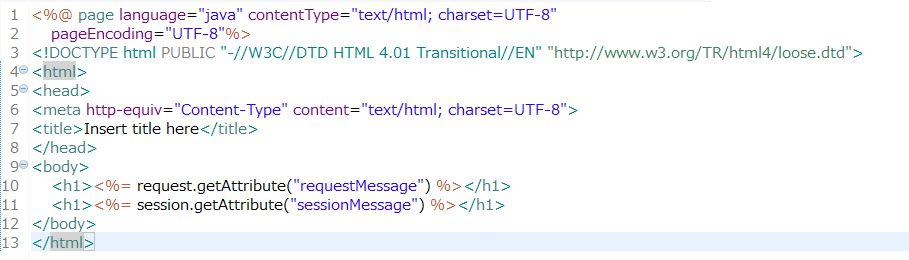
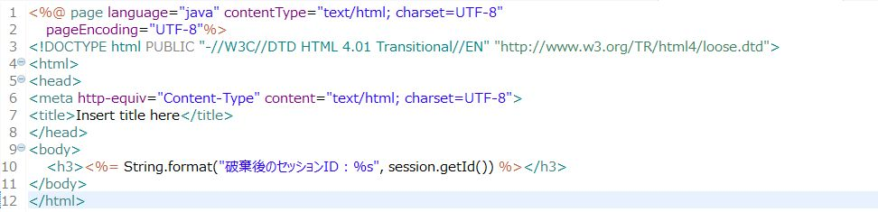

Webアプリケーションにおけるセッションとは複数のリクエストにまたがって情報を保持する仕組みのことです。WebクライアントとWebサーバーのみの構成だった場合、リクエストの生存期間がそれほど問題になることはありません。以下の図のようにWebクライアントからWebサーバーへの一度の要求がそのままリクエストの生存期間になるからです。
しかし、Webクライアントから送信されたリクエストがレスポンスとしてWebクライアントに返却されるまでにアプリケーションサーバーが介在すると、途端にリクエストの生存期間が見えづらくなります。それはWebサーバーからアプリケーションサーバーへリクエストが転送され、さらには前回の記事で説明したようにフォワードやインクルードといった仕組みを使ってアプリケーションサーバー内でもリクエストの転送が行われるからです。しかし、難しく考える必要はありません。アプリケーションサーバー内でどれだけ複雑な仕組みになっていようとも、Webクライアントにレスポンスが返された時には既にリクエストの情報は失われていることに変わりありません。
ここで問題となるのが、Webクライアントにレスポンスが返された後も情報を保持し続けたい場合です。例えばユーザーのログイン情報は一度のリクエストで消失してしまうとリクエストを送信するたびにユーザーIDやパスワードを入力しなければならなくなりますし、ネット通販におけるショッピングカートの中身がリクエストにたびにクリアされてしまってはショッピングカートという機能そのものが成立しません。そこで複数のリクエストにまたがって情報を保持する仕組みであるセッションという概念が誕生しました。
セッションは一般的にはCookieにセッションIDと呼ばれるセッションを一意に特定するための値を保持することによって実現しています。セッションIDに紐付く情報はアプリケーションサーバー側で保持しています。CookieはWebブラウザ側で保存されますので、サーバー側でセッションが生存し続ける限り何度でもセッションにアクセスすることが可能となっています。サーブレットにおいてはHttpSessionオブジェクトによって実装され、プログラマーはCookieの操作などを特に意識することなく利用できるようになっています。それではセッションを使ったサーブレットのサンプルを見てみましょう。
今回は複数のリクエストにまたがってセッションが生存していることを確かめるためにJSPを2つ用意しました。単純に1つ目のJSPからリンクをクリックすることで2つ目のJSPに遷移するという構成です。それぞれでリクエストに保存されたメッセージとセッションに保存されたメッセージの両方を表示させようとしています。
実際に実行してみましょう。
1つ目のJSPが表示されました。リクエストに保存されたメッセージもセッションに保存されたメッセージも両方正しく表示されています。リンクをクリックして2つ目のJSPに遷移してみます。
今度はリクエストに保存されたメッセージの表示がnullとなりました。これはリンクをクリックしたときに発出されたリクエストが1つ目のJSPを表示した際のリクエストとはまったく別物になっていることを意味します。一方でセッションに保存されたメッセージはリクエストが新しく生成されても正しく表示されています。複数のリクエストにまたがってセッションに保存した情報が生存していることが確認できたと思います。
セッションが複数のリクエストにまたがって生存し続けることをサンプルを通して見てきました。応用すればユーザーのログイン情報やショッピングカートなど様々な機能に利用できるとても便利で強力な機能なのですが、リクエストと比べて生存期間が長いことが問題になります。即ち、どこからどこまでを1回のセッションとするかという問題です。例えばログインを要するようなシステムではユーザーがログインしてからログアウトするまでを1回のセッションとするのが適切でしょう。しかし、ユーザーがこちらの注文どおりにログアウトの操作をしてくれるとは限りませんし、用が済めばブラウザを閉じてしまうかもしれません。このような場合にいつまでセッションを保持し続けるのかということが問題になります。この為、多くのサーバーソフトウェアでは最後にリクエストが送信されてから一定時間経過するとセッションを破棄する仕組み（セッションタイムアウト）が実装されています。
また、リクエストに比べて長期間データを保持することができるため、使い終わったらクリアしておかないとシステムが不正な動作を起こす原因にもなりかねません。例えば購入手続きが終わった商品がショッピングカートに残り続けたら大きな問題になりかねないことは容易に想像がつくと思います。新たなリクエストが作られる頃にはプログラマーが特に意識しなくても勝手に情報が消えてくれるリクエストとは違って、セッションからデータをクリアするためにはプログラマーが明示的にクリアするための処理を記述する必要があるという点は常に意識しておくべきです。
前節で述べたように、セッションは強力な機能である反面プログラマーによる管理が必須です。ここでは、不要となった情報の削除・セッションそのものの破棄といったセッション管理の実装について見ていきます。先ほど作成したサーブレットを以下のように修正します。
25行目のsession.invalidateメソッドがセッションを破棄するメソッドになります。遷移先のJSPは以下のように修正します。
これを実行すると以下のようなエラーになります。
明示的にセッションを破棄するのはシステムからログアウトする時がほとんどだと思いますが、覚えておくと良いと思います。実用上はセッションそのものを破棄するのではなくセッションに保存したデータをクリアする方が利用頻度が高くなると思います。この場合はHttpSessionオブジェクトのremoveAttributeメソッドを利用します。勘の良い人は既に気付いたと思いますが、このメソッドはsession.setAttributeメソッドで保存したデータを消去する役割を担います。またまたサーブレットを修正します。
JSPも以下のように修正します。
JSPの10行目でsession.removeAttributeメソッドを呼び出し、"sessionMessage"という名前で保存されているデータを消去しています。実際に実行結果を確認してみましょう。
セッションに保存されたデータはJSPが読み込まれた際にクリアされていますので、サーブレット側で設定した"セッションクリアのサンプル"という文字列ではなくnullが表示されました。セッションは非常に便利な仕組みなのですが、管理が煩雑になるので濫用は避けるべきです。セッションを使う場合はセッションそのものを破棄する方法、セッションに保存されたデータを消去する方法をしっかりと理解したうえで活用してください。